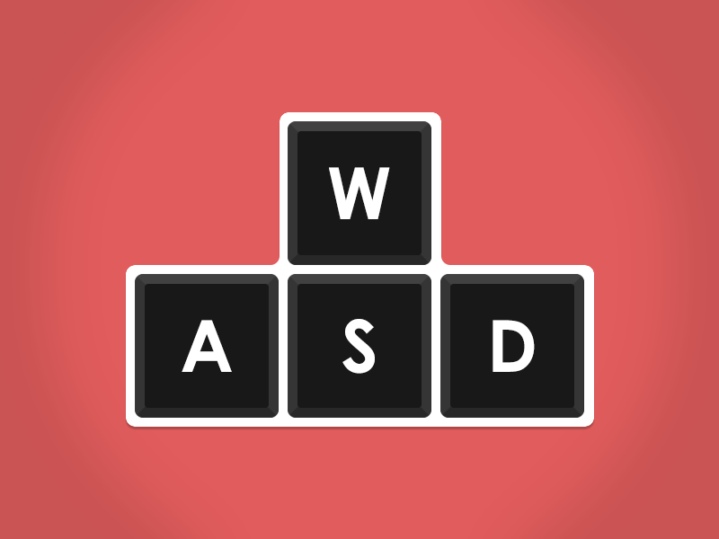
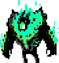
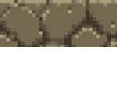
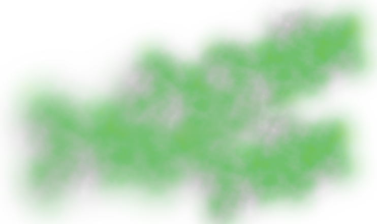

Управление
Управление в игре осуществляест на привычне нам стрелочки и wasd (цфыв), но персонаж может двигаться только вверх, влево и вправо.
Игровые механики
в этом платформере присутсвуют такие препятсвия:
уровень 1 - супер страшный и пугающий (надеюсь) демон Арсений, но не стоит его боятся, снаружи он страшный (надеюсь), а внутри добрый,
он всего лишь ищет себе друзейю.
уровень 2 - есть лава, ты туда не лезь, она тебя сожрет =)
уровень 3 - какие то платформы, которые умеют двигаться и есть какой то газ, непонятно как он там оказался, но нюхать его не стоит.